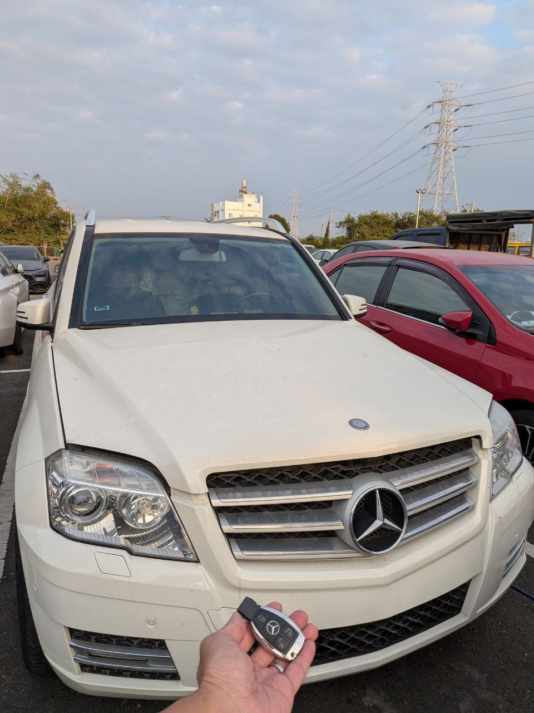

現場實拍：苗栗市 Mercedes-Benz GLK 智慧鑰匙全丟匹配完工
苗栗地區賓士救援：免拖吊、當場完工
當車主在苗栗市發現最後一把 2011年賓士 GLK 的鑰匙遺失時，車輛已處於完全無法發動的狀態。傳統原廠方案通常需要將車輛拖回服務廠，並等待 7-14 個工作天。極致核心接到通知後，立即攜帶專業解碼設備親赴現場，為車主省去昂貴的拖吊費用與漫長的等待時間。
技術細節：FBS3 系統現場重構
此款 GLK 採用賓士經典的 FBS3 防盜系統。我們透過 OBDII 診斷接口與紅外線採集技術，直接讀取電子點火開關 (EIS) 內的加密資料。在不拆卸任何內裝組件的前提下，成功計算出防盜核心密碼。
- • 快速響應： 苗栗市區現場 1 小時內完成。
- • 數據安全： 使用車系專用設備進行計算，不影響車輛原有電腦數據。
- • 完成匹配： 提供全新高品質智慧鑰匙，遙控與感應功能同步恢復。
這起案例再次證明了極致核心在歐系車防盜系統上的深厚實力。無論是鑰匙全丟 (All Keys Lost) 還是備份新增，我們都能在現場一次搞定。